Spatial data is just like normal data except it has an extra “geometry column” often referred to as “geom”
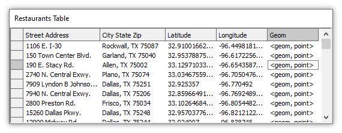
Spatial data
Spatial data is typically an empty shape or object:
Grid cells / hexagons
Polygons
Lines
Points (e.g. restaurants)
The magic happens when we join non spatial data to spatial data
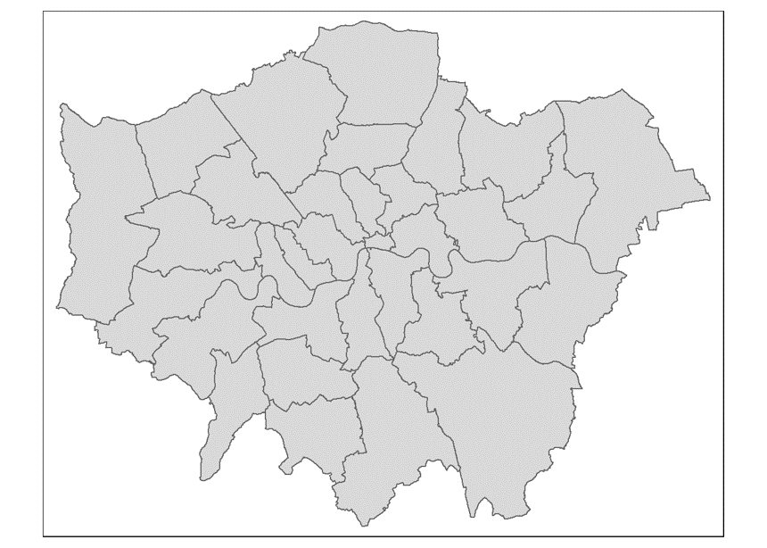
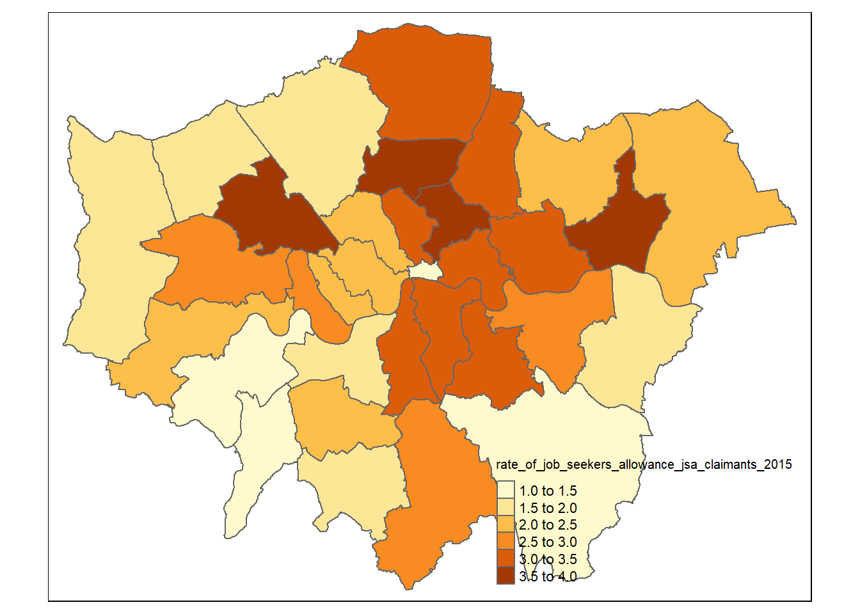
If someone gives you some (spatial) data, what is the first thing you might …
e.g. here is an excel file that has data on:
BMI
steps taken per day
location
Plot it!
“While we teach our students the benefits of visualization, answering the specific hypothesis-driven questions did not require plotting the data. We found that very often, the students driven by specific hypotheses skipped this simple step towards a broader exploration of the data. In fact, overall, students without a specific hypothesis were almost five times more likely to discover the gorilla when analyzing this dataset”
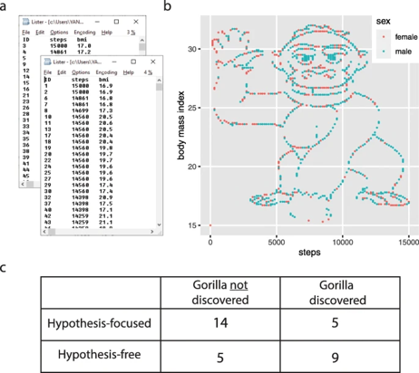 Yanai and Lercher (2020)
Types of spatial data: raster (‘grid’) Vs vector
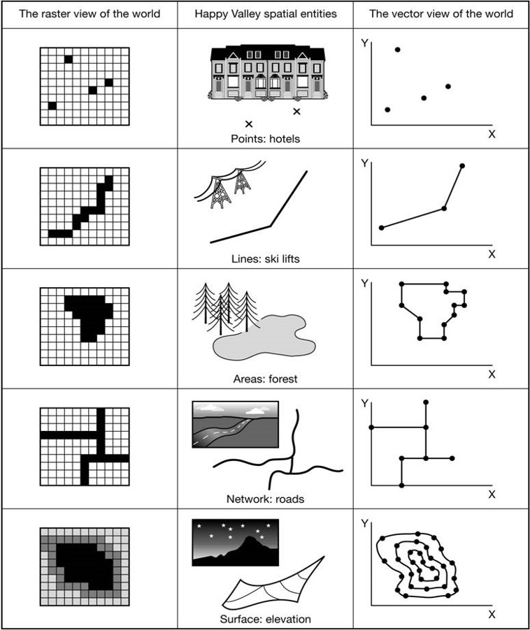
Vector
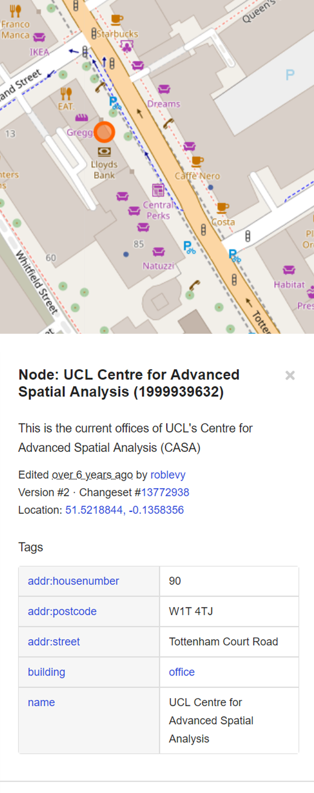
Raster
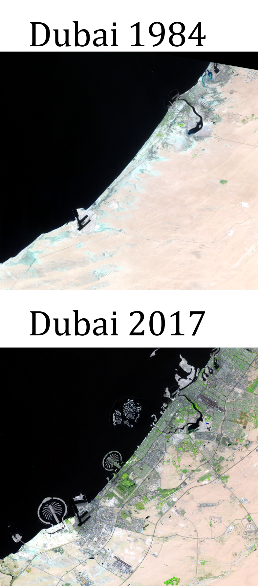
Features - vector data
Each column also has a data type
Text
Numeric?
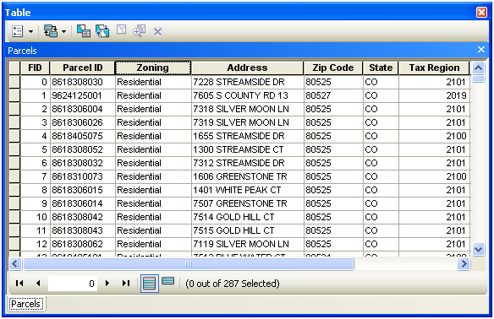
Representing the World
The earth is a 3D sphere (well, almost). It’s wider than it is tall
In order to locate a point on the surface of a sphere, we need a set of coordinates
Coordinates will tell us how near to the top or bottom of the sphere we are, or how far around
But where do we start?
Representing the World
Geographic Coordinate Reference System
treats the globe as if it was a sphere divided into 360 equal parts called degrees
Projected Coordinate Reference System
flat, two-dimensional plane (through projecting a spheroid onto a 2D surface) giving it constant lengths, angles and areas
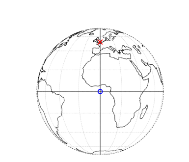
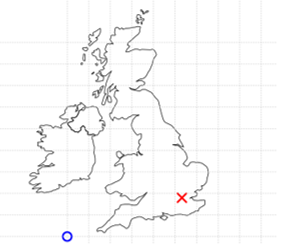
Coordiante reference systems
Representing the World
What is wrong with this map?
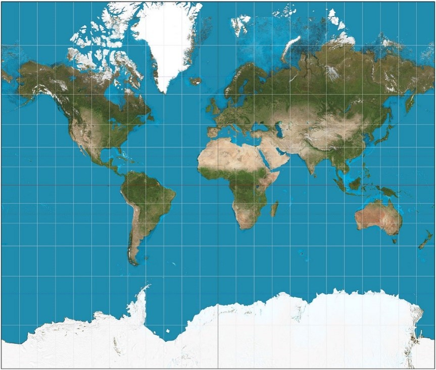
Can you make an accurate map
Representing the World
Mercator:
European imperialist attitude
Size = POWER, ethnic bias
Are you a sailor?
Gall-Peters projection:
Right size of countries
South UP?
Top = important
First known map 1154 Arab geographer Muhammad al-Idrisi
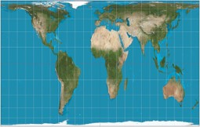
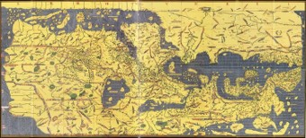
What is a GIS
We need to separate Geographic Information / Spatial Data SCIENCE from the tools we use to carry it out:
GI / SD Science is facilitated by the information systems (technologies – hardware, software + human interaction) we use to:
Store (input)
Manipulate / Process
Distribute
Analyse
Retrieve (output)
Data / Information
We do GI Science on the GI Systems
Data vs information
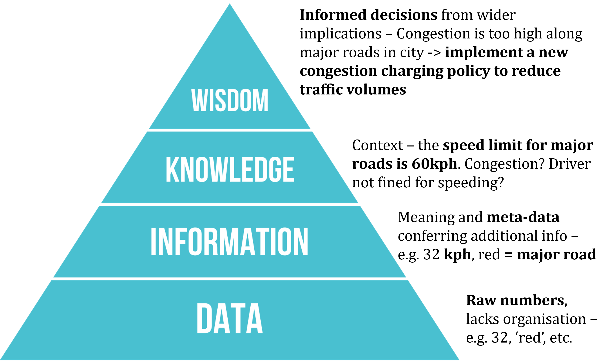
The Canada GIS
Developed by Roger Tomlinson at UCL in 1970s
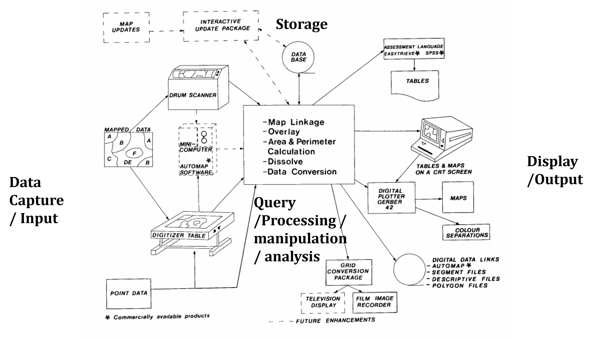
ESRI
From 1982, ESRI cornered the GIS market in terms of data storage, tools for Query /Processing / Manipulation / Analysis and Display / Visualisation
The Graphical User Interface – GUI – allowed non-specialists to carry out GI Science for the first time
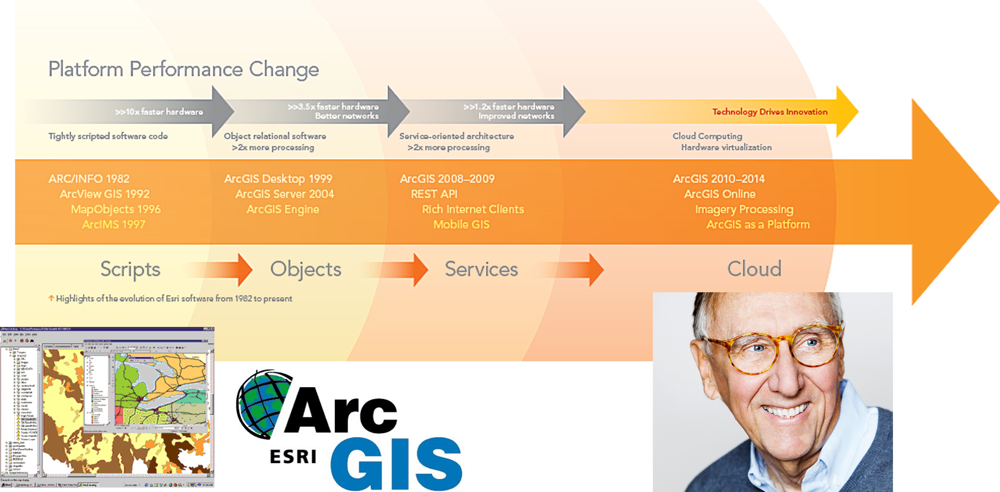
QGIS (Quantum GIS)
Under development since 2002
Free & Open Source – everything is on github!
Probably best GUI GIS aside from Arc
Connects to PostGIS database very effectively
Slick maps with nice default features
Large library of plugins for analysis
Programming + GIS
“Everyone does need to learn to code. It is no longer sufficient for a GI Scientists to just work with a standard GIS interface: menus, buttons and black boxes. ” Brunsdon and Comber (2020)
Comparison of 4 GWR approaches all produced the same result except the method in ArcGIS from ESRI who didn’t reveal the code.
R + Pthyon
Data management/ storage facilitated through connection to a range of file formats (almost any you can think of)
Plus a huge host of software packages for reading, writing and converting data held within these files into a format R can handle
R + Pthyon
How to lie/ manipulate maps and outcomes
What is wrong with this?
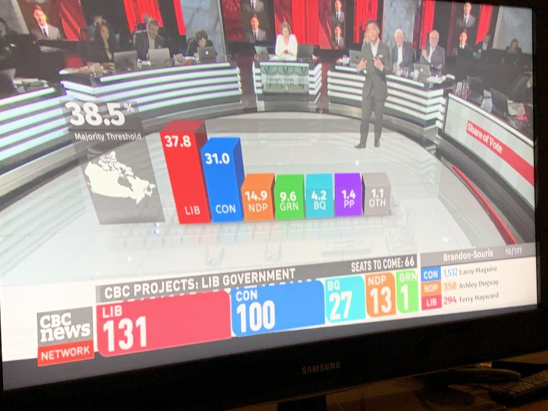
What is wrong with this?
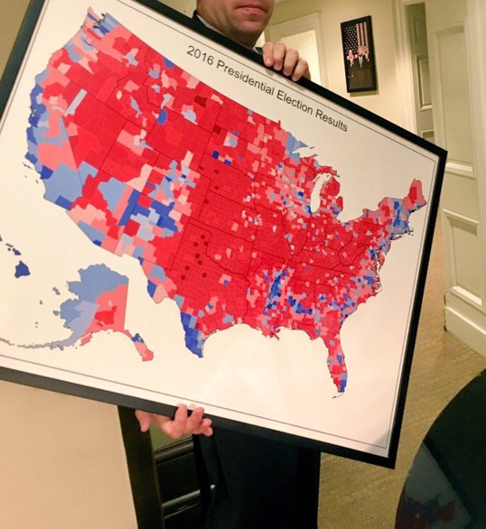
Issues
Polygon size does not equal population
Did all the people in each county vote for 1 party? NO.
Electoral college
Each state gets three votes
Remaining divided by population
BONUS to smaller states
1 vote in Wyoming = 193,000 people
1 vote in California = over 700,000 people
Democrats got more votes, but lost
A people based map?
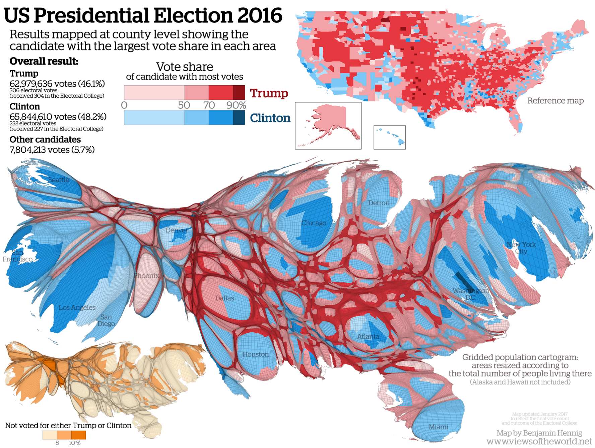
Who has made our boundary data?
Who has made manipulated our boundary data?
Who has made our boundary data?
Redlining
1930s – American Home Owner’s Loan Corporation – prevent missed payments…residential security maps based on race
People abandon areas
Can’t refinance
Less property tax for services
Social equity issues remain
1968 Fair Housing Act
Los Angeles Redlining
Who has made our boundary data?
Gerrymandering
Every 10 years electoral districts are re-drawn “redistricting”– Thomas Hofeller (republican) = PACK and CRACK
PACK = put all the democrat voters in 1 district
CRACK = sprinkle them out so they never have majority
What is a forest? Conceptual vagueness of geographic concepts. Bennett(2001)
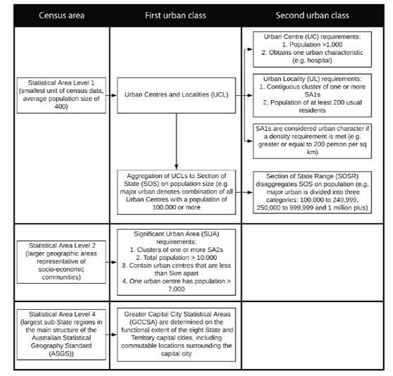
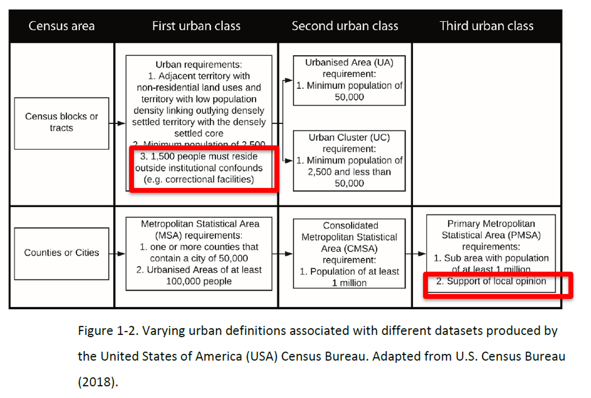
Problematic
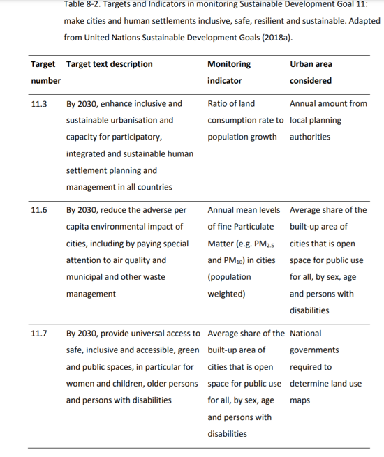
GIS methods let us answer the question “where” is my phenomona occuring and is it random or related to another variable
Point / continuous data
Questions we can ask / set
Points
Are these points distributed in a random way or is there some sort of pattern (uniform or clustered)?
We should expect randomness but randomness conforms to known probability distributions
Spatially continuous observations (e.g. values of polygons)
How (dis)similar are our values assigned to geographic units across geographic space
What patterns show
Something in the water: the mythology of Snow’s map of cholera. Source:Kenneth Field
Spatial Epidemiology: Lung Cancer
Similar methods that we will use today - incidences of lung cancer relative to the physical envrionment - are they clustered and where?…leads to why
are the locations of lung cancer similar?
Does the incinerator have any influence ?
Spatial Epidemiology: Mortality
Similar values might suggest there is something more going on
Some sort of spatial influence
Note the difference between spatially continuous and point data
Quantifying Spatial Patterns
What is fixed?
Point Pattern Analysis
Properties are fixed (e.g. binary - present or not)
Discrete objects - present or not, binary, yes or no.
Examples: fly tipping, stop and search, blue plaques, pharmacies
Properties fixed, but space (location - x,y) can vary
Spatial Autocorrelation
Space (e.g. the location of the spatial units - wards, boroughs etc) is fixed
The values of the spatial units vary
Where the values are similar we say they exhibit Spatial Autocorrelation
Space is fixed, but properties (values) can vary
Examples
Question: Are the points clustered or are they random?
If we identify clusters what are the socio-economic characteristics ?
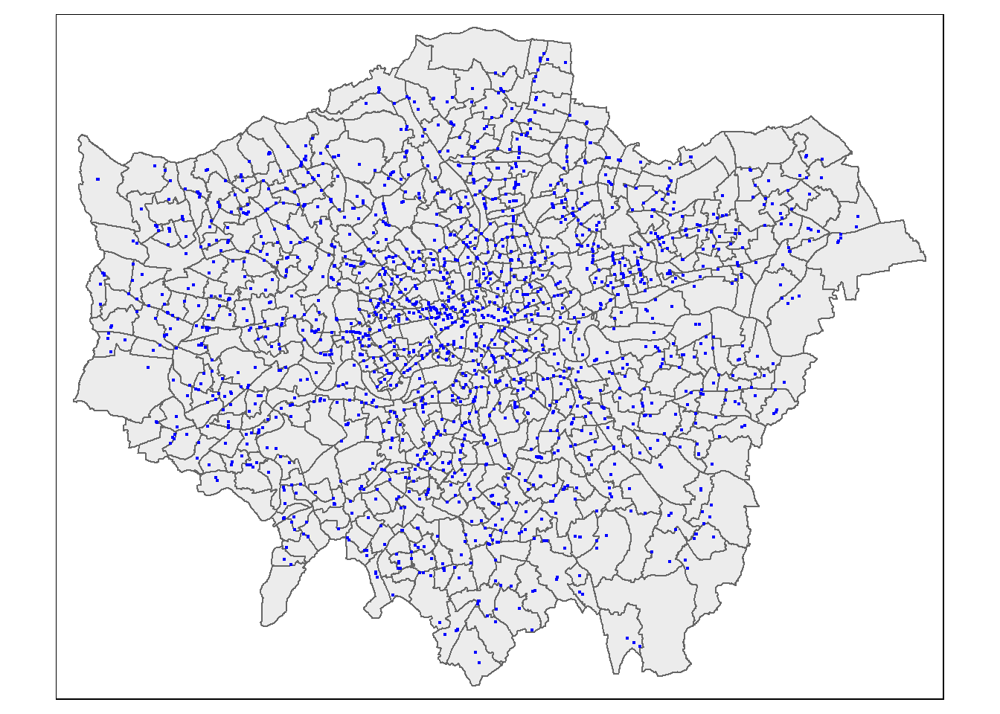
Examples
Question: Are the values similar between certain wards?
Spatial modelling
What are the factors that might lead to variation in Average GCSE point scores across the city?
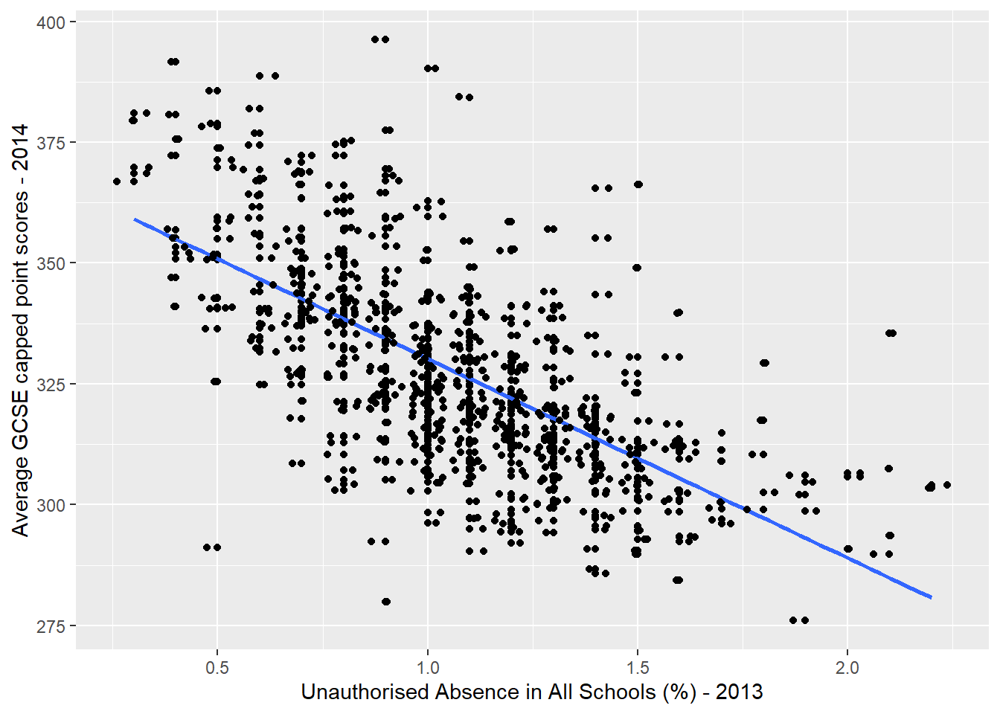
Dependent variable labelled y
Residuals are the dots not on line
\(y_i = \beta_0 + \beta_1x_i + \epsilon_i\)
\(\beta_0\) is the intercept (the value of \(y\) when \(x = 0\) - somewhere around 370 on the graph above);
\(\beta_1\) is sometimes referred to as the ‘slope’ parameter and is simply the change in the value of \(y\) for a 1 unit change in the value of \(x\) (the slope of the blue line) - around -40.
\(\epsilon_i\) is a random error term sums 0 - add all of the vertical differences between the blue line and all of the residuals
Spatial regression
Here we haven’t accounted for the influence of a neighbour…
In our model the residuals (observed-predicted) should show no pattern (or autocorrleation)…in other words they should be random!
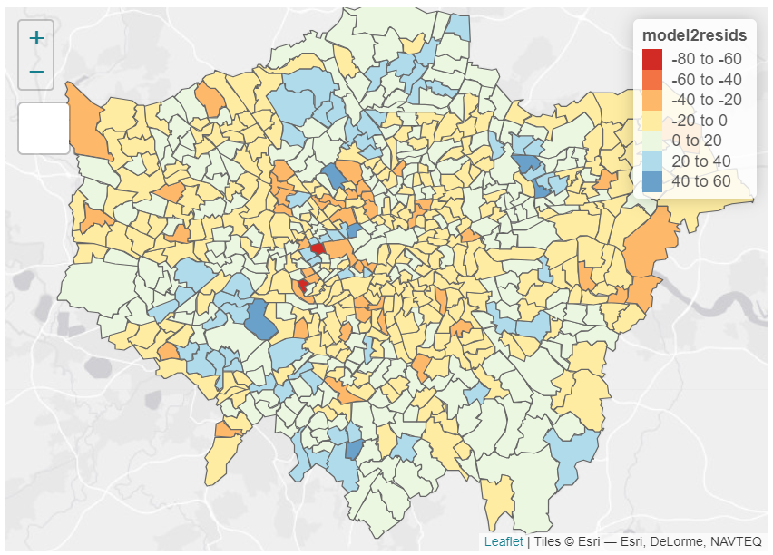
Spatial regression
At this point we have several options
Global - single regression models
lag model - we can include the value of neighboring GCSE values in the model
error model - we treat the errors as a nuisance but we must account for them.
Local model
Geographically weighted regression - we do lots of local regression models and get coefficients that vary over the study area.
Machine Learning versions = geographically weighted random forests…
Networks / location allocation
Question: You are in charge of a supermarket chain and you want to open a new store
Question: You work for a delivery company and want to locate a warehouse
Question: In the event of an emergency call, where is the nearest fire station / ambulance / police car?
Networks / location allocation
Inputs:
Street network (info on roads, speeds, turn restrictions)
Open Street Map (free, Volunteered Geographic Information data)
Ordnance Survey Master Map (UK national mapping agency)
Demand points
Often where people live (e.g. houses or census data)
Facilities
The resource (e.g. fire station, hospital)
Solver type…
What are you solving for?
Minimize Impedance: locate warehouses, because it can reduce the overall transportation costs of delivering goods to outlets
Maximize Coverage: fire stations - must arrive to demand point within response time
Maximize Capacitated Coverage: hospitals - serve demand without going over capacity
Great…however…
food deserts’ where people are likely to pay a higher cost for their weekly food shopping and have to shop in more expensive small convenience stores with a limited stock of good value fresh products.
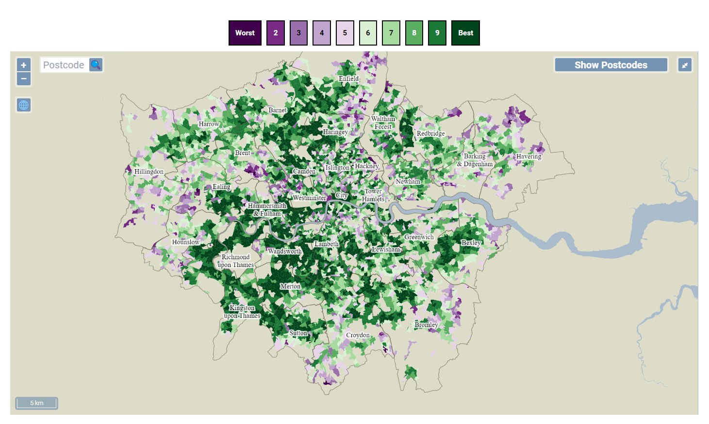
The E-food Desert Index (EFDI) is a composite index which measures accessibility to groceries. Source:Trust for London
More poweful analysis
Instead of just using the network we can now combine public transport, elevation, use timetables and set parameters such as maximum waiting time using R5R